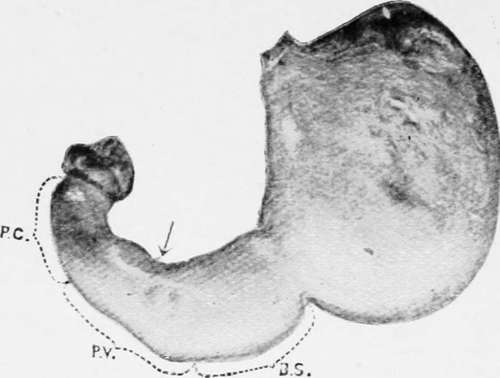
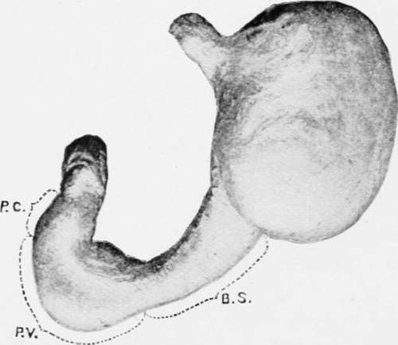

Chapter II. Surgical Anatomy Of The Stomach
Description
This section is from the book "Cancer Of The Stomach", by A. W. Mayo Robson, D.Sc, F.R.C.S.. Also available from Amazon: Cancer of the Stomach.
Chapter II. Surgical Anatomy Of The Stomach
Although it is unnecessary to give a complete anatomical description of the stomach, yet some consideration of its surgical anatomy is called for in dealing with any branch of gastric surgery. Under pathological conditions there is no organ of the body which varies so much in size, position and relations as the stomach. When relaxed (as it is usually seen when operating or at post-mortem examination) it is a somewhat pear-shaped, hollow organ situated in the left hypochondriac and epigastric regions, covered in two thirds of its extent by the liver and diaphragm and to the extent of one third by the anterior abdominal wall and reaching to within two inches of the umbilicus ; but it may be so contracted in certain cases of stricture of the oesophagus as to lie away from the surface, completely under cover of the liver and diaphragm; or it may be so dilated in some cases of stricture of the pylorus as to occupy every region of the abdomen and to extend into the true pelvis.
The general axis is inclined obliquely downwards and to the right from the only normally fixed part, the cardiac orifice; but the axis may be almost vertical as in some cases of gastroptosis, or horizontal as in some cases in which the pylorus is fixed to the under surface of the liver by adhesions, or by a short gastro-hepatic mesentery. The cardiac orifice is situated at the back of the abdomen on the left of the tenth dorsal vertebra, which spot corresponds in front with the junction of the seventh left costal cartilage to the sternum. The pyloric outlet is normally situated to the right of the eleventh and twelfth dorsal vertebra?, and when the stomach is empty the pylorus lies 2 inches below, 1 1/2 inches to the right and H inches in front of the cardiac orifice; but when the stomach is distended the pylorus lies 2 1/2 to 3 inches to the right and 2 inches in front of the cardia, it being normally movable over a limited range.
The pylorus may, however, be firmly fixed to the under surface of the liver by adhesions, or so freely ^ movable that when it is the seat of tumour it may be made to reach into every region of the abdomen, and I have even seen it in the pelvis.
As seen post mortem (if hardened by formalin) the pyloric aperture projects into the duodenum and resembles the external os uteri, the pyloric portion of the stomach being contracted to the size of the small intestine.
The pylorus is normally closed, except when food is passing*, but an examination of the pylorus in a large number of living subjects during operation has convinced me that post-mortem findings are not always safe to argue from in the living, for I have very frequently found the pylorus patulous and readily permitting the passage of the forefinger when the stomach was empty. It may be so contracted in disease as to barely admit the passage of a probe, or rarely it may be found so patulous as to permit two fingers to pass.
A description of the stomach would not be complete without mentioning the fact that under the influence of peristalsis the shape of the stomach is not a thin-walled, flaccid sac, corresponding to the usual description as seen in the dissecting room, for when contracting it may be seen to be composed of a cardiac division somewhat globular in shape and a pyloric portion resembling thick-walled intestine.
W. D. Cannon (American Journal of Physiology, 1898, vol. i, p. 359) fed cats with pulpy food impregnated with subnitrate of bismuth, and then observed the movement of the stomach contents by means of the Rontgen rays. In this way the saccular cardiac portion and the tubular pyloric portion were clearly demonstrated. He found the fundus to be an active reservoir for the food, squeezing its contents gradually into the pyloric part, which then contracted on it by a series of peristaltic waves. Each wave took about thirty-six seconds to pass from the middle of the stomach to the pylorus and the different waves followed each other at intervals of ten seconds. As they passed the incisura angularis the indentation in the lesser curvature became deeper. The cardiac sac did not take part in the active peristaltic wave, but seemed to squeeze its contents gradually into the pyloric part.
Plate I. Stomach of an adult female in an early stage of the emptying process.
Stomach of an adult male showing the division into a cardiac sac and a gastric tube.
Hirsch and Cannon have shown that the discharge of food takes place intermittently at irregular intervals according to the condition of the food which reaches the pyloric canal.
This functional division of the stomach is clearly shown in the appended drawing copied from Cunningham's paper, " Varying Form of the Stomach in Man and the Anthropoid Ape" (Transactions of the Royal Society of Edinburgh, 1906, vol. xlv, Part 1, No. 2).
The stomach has two borders and two surfaces. The upper border is known as the lesser curvature ; it extends from the cardiac orifice to the pylorus and is from three to four inches in length it is slightly concave from above downwards and to the right, and is nearly altogether on the left of the spine.
The greater curvature is about three times the length of the lesser, and is convex throughout except a small portion near the pylorus; it commences on the left of the cardiac orifice and arches upwards over the dome of the stomach to the left, then passes downwards and to the right, bending upwards again to reach the pylorus.
The surfaces are commonly spoken of as anterior and posterior, and when the stomach is empty this is correct ; but when distended the position is altered so that the anterior surface looks upward as well as forwards and the posterior downwards and backwards.
The anterior surface is in contact above with the left lobe of the liver and diaphragm and below with the abdominal wall in the epigastric region.
The posterior surface rests on the transverse colon with its meso-colon, the pancreas, the left kidney and supra-renal body and the large vessels.
Continue to:
- prev: Introduction With Some General Remarks On Cancer. Continued
- Table of Contents
- next: The Stomach Chamber
Tags
stomach, operation, cancer, tumour, ulcer, gastric, gastrectomy